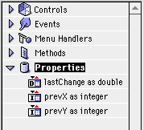

Writing a Screen Saver in RB
By Dan Vanderkam
If you're a regular reader of RBM, you'll remember the cover story on extensions a few months back. For this issue, I've decided to give another, more practical example of how this works.
As the title of this article implies, I'll be explaining how to make a screensaver in RB...
When to Activate
First, make a window like this:
The timer's period should be set to 100, and the window's style should be Global Floater. It should also have a black background. This window will allow us to check when the screensaver should be activated.
What precisely activates a screensaver? A lack of mouse movement and key pressing of course! For this example though, we'll only be considering the mouse criteria.
Now, open up the code editor for this window, and create two new properties, like so:

These variables will represent the X and Y coordinates of the cursor at the last check, and the last point in time at which the mouse moved.
Now comes the code! Essentially, our code must do 5 things:
It sounds like it'll be long and complicated, but it isn't (after all, this is article has a limited length =) ). Anyway, step one is simple. Open up the code editor for the Timer. This code will do quite nicely:
That simply makes two variables, and puts the mouse's X and Y position in them.
Now, for step two. This step is also simple, but it's very important. The results of it will control what the rest of the steps are. Because we'll store the previous X and Y coordinate in the prevX and prevY variables, we only need to check if prevX=X, and if prevY=Y. This code will do that:
Now that we're armed with the knowledge that step two provided us, we can proceed to step 3. This step is also quite simple. Because the mouse has moved, we must assign new prevX and prevY values, as well as updating the time that the lastChange variable contains. So, these simple statements will help immensely:
For those not familiar with it, the ticks statement provides us with the number of ticks (60ths of a second) since startup, and thus lets us store times.
Step 4 is up next. In this step, we must find out how much time has passed since the last mouse movements. To do this, we'll use the Ticks function once again. For this particular example, the mouse must be perfectly still for two minutes before the screen saver activates. Two minutes contain 120 seconds. And, since a second contains 60 ticks, there must be 120*60, or 7200 ticks in two minutes.
This routine will subtract the current time from the time stored in lastChange. If the difference is greater than 7200 (two minutes), then we can deactivate this timer, and go on to step 5.
Step 5 is the hardest one, and the one that gives you the most freedom. Therefore, it gets its own section.
Making the Screen Saver
The term "Screen Saver" is actually a big lie. The nifty effects that sceen savers generate actually decrease the lifetime of your monitor. But screen savers are fun, and most people have them.
For this example, we'll have colored lines dance across the screen. This will involve three steps:
The first step isn't something that RB can do on its own. We'll need the MenuBarMagic package. This is available at the RB Cafe (under XCMDs:User Interface), or from RBM's site, here. If you're viewing the offline version of this, then you already have the neccesary files.
Once you have the files, make a new folder in your project window, and call it "MenuMagic". Next, place all of the files in it. Your project window should look like this:
The MenuBarMagic module adds two important commands: HideMenuBar, and ShowMenuBar. Since MenuBarMagic requires it, you must also put the code "InitMenuBarMagic" into the window's Open event. If you don't, then the menu bar won't be hidden.
Since we'll be doing quite a bit of stuff to activate the screensaver, let's put it all into one method. Make a new method called "DoSaver", with no parameters or return value. Also, we'll need to change the Timer's code to use this method. The Timer's action event will now look like this:
Now, in our "DoSaver" method, we'll use the HideMenuBar command that MenuBarMagic has provided us. Since this command is only one line, our routine is quite simple right now:
I told you it was simple! Now, we have to add in the second step of the screen saver—blacking out the screen. One way to do this is to use a SpriteSurface. However, that severely limits what our screen saver can do. If you remember our only window, it has a black background. There's a reason for that. If we move its top beyond the upper-left corner of the screen, and make it large enough, its black interior will cover the screen, and achieve the same effect as a SpriteSurface would.
We'll do that first by setting the window's top and left to a position well beyond the top-left corner of the screen. Then, we use Screen(0).Width and Screen(0).Height to stretch the window to a large enough size. Here's the code:
In this particular method, Self means that we're accessing a property of the window. In this particular method, Me would have worked as well. There's one last thing our method must do though. In the next section, we make a new timer, called Timer2, which performs the screen saver's graphics. DoSaver must activate that timer, and deactivate Timer1. Here's the code for that:
Now comes the show!
A Line Extravaganza
In our screen saver, one new line will appear every 10th of a second. So, let's create a new timer (Timer2), and set its Interval to 100. Set its Mode to zero.
Every window has a graphics object, and a global floater is no different. The command to draw a line in a graphics object is <graphics>.DrawLine X1, Y1, X2, Y2. We can specify the color using the Forecolor property. So here, complete with random number generators, is the line code for Timer2:
Now, we need add a way to stop the screen saver. For this program, the screen saver will deactivate whenever the mouse is moved. We've done this before, so we can simply use code from Timer1 to test that. If the mouse has moved, then we'll call a method called "StopSaver", which we'll make in the next section. This is the new code for Timer2:
Deactivating the Screen Saver
To activate the screen saver, we did the following:
So, to deactivate the screen saver, we'll do the exact opposite:
To do this, we'll make a method called "StopSaver". Like DoSaver, it has no parameters or return value.
Activating the Mouse timer is simple.We'll just switch its mode to 2. Stopping the Dancing Lines timer (Timer2) is also easy: we just switch its mode to 0. That leaves removing the cover.
If you recall, we covered the screen by streching out a window across it. In order for that covering to be quick, we covered the screen in one command. Now, we must uncover the screen in one command as well. Because the window is already to the left of the screen, simply decreasing the width to make all of the window beyond the screen's edge will be easy. Since its Left is -100, setting its Width to 90 will do the trick. So, the code for StopSaver is as follows:
That was simple enough! Your screen saver should now run perfectly!
Making it an extension
Now that it works well as an application, let's make it an extension! To do this, compile it like a normal application. Then, open it in Resourcer (or ResEdit), and open its SIZE resource. Look for a "background application" checkmark, and click it, like so
This tells the Mac that our screen saver will function in the background.
Finally, change the application's type code from APPL to appe. Be sure that it's lower case. Otherwise, the computer won't think that it's an extension! Drop it in your extensions folder, and reboot. The screen saver should function like any good extension would.
In Conclusion...
This is a nice little example of how to make an extension, and it shows how to black out the screen, wait for events, and the likes.
Like any program though, this one is far from perfect. If you like this idea, here are some suggestions for other features: